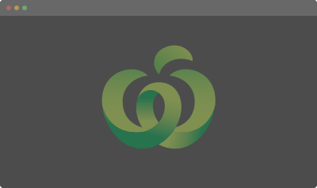

JL
Work
About
Hello,
I'm Jen — a user experience designer.
I'm passionate about designing for humans, with humans. Currently based in Sydney, designing user experiences and interfaces at Woolworths Group.
Projects
Compilation
WooliesX
— ongoing projects

Concept
UNSW Rooms
— university room booking application
Redesign
Huli
— wildlife conservation information system
Development
TriAngles
— progresison planning application for UNSW students